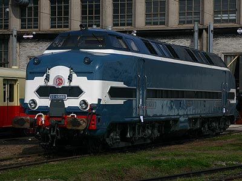
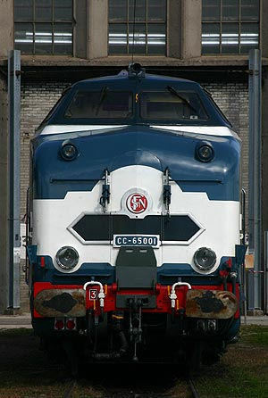
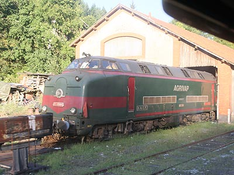

La CC 65000 version 
Jean Pierre Gléonec a réalisé un pack de CC 65000 pour MSTS
Ferrovia - 09 Décembre 2009
060 DB - CC 65000
Les sous-marins de l'Ouest
Machines Diesel-électrique bi-moteur de puissance moyenne construites à 20 exemplaires en 1957. Rebaptisées CC 65000 en 1962.
La forme massive de la caisse et les cabines de conduite haut-perchées leur ont valu le surnom de "Sous-marins".
La carrière
Hormis la brève utilisation de quelques engins pour des trains passe-frontière sur le noeud de Bâle au tout début de leur carrière, les 060 DB ont passé leur 30 ans de service dans le grand Ouest sur une étoile rayonnant autour de la Rochelle vers Bordeaux, Nantes, Poitiers ou Angoulême. Il s'agissait de la première véritable série d'engins Diesel de la SNCF destinés à relever les locomotives à vapeur sur des trains de voyageurs Express ou de messageries. Cependant, du fait du faible nombre d'engins construits et de la rapidité des progrès techniques à cette époque, on peut considérer les CC 65000 comme une série prototype, ou du moins, de transition. Ils furent ainsi rapidement dépassés par les machines monoteur équipées de V16 plus puissants et fiables.
Les Sous-marins ont perdu assez vite leurs prestations voyageurs et leurs chaudières à vapeur furent déposées. Pénalisés par une puissance trop juste et une fiabilité capricieuse, la SNCF a amorti l'ensemble de la série au cours des années 1980.
Plusieurs engins furent alors récupérés par des Chemins de fer touristiques : TVT à Richelieu (65006, 65012) et Agrivap à Ambert (65005). Le CC 65005 est le dernier Sous-marin en état de rouler par ses propres moyens. L'Agrivap a décidé de limiter l'usage de cette vénérable machine pour mieux la préserver.
Le CC 65001 a quant à lui rejoint la collection du Musée du Chemin de Fer à Mulhouse après restauration par les ateliers de Quatre-mares. Lors de la transformation du Musée en "Cité du Train", le CC 65001 eu droit en Février 2005 à une exposition à Paris-Est en compagnie de la 230 D 9 Nord et de l'autorail Decauville X 52103 pour fêter la fin des travaux et annoncer la réouverture au public. Il s'est également affiché aux portes ouvertes des ateliers de Chalindrey en Septembre 2007.
Quelques données techniques
Constructeur : CAFL St Chamond, Alsthom, SACM
Chaîne de traction : Diesel-électrique, 6 moteurs de traction à collecteurs suspendus par le nez
Vitesse Max : 130 km/h
Motorisation : 2 moteurs Diesel SACM MGO V12 VSHR
Puissance maximum : 1850 kW
Bogies 6 moteurs continus TA 653 A1 suspendus par le nez
Longueur : 19,814 m
Masse : 104t
Aptitude à l'Unité Multiple
Pour plus d'info :
les CC 65000 sur Wikipédia
l'inventaire des CC 65000 sur Trains du Sud-Ouest

La CC 65001 à Chalindrey (22/09/2007)

La CC 65001 à Chalindrey (22/09/2007)

La CC 65005 sur la ligne du Livradois-Forez (12/08/2009)
La CC 65000 version 
Jean Pierre Gléonec a réalisé un pack de CC 65000 pour MSTS